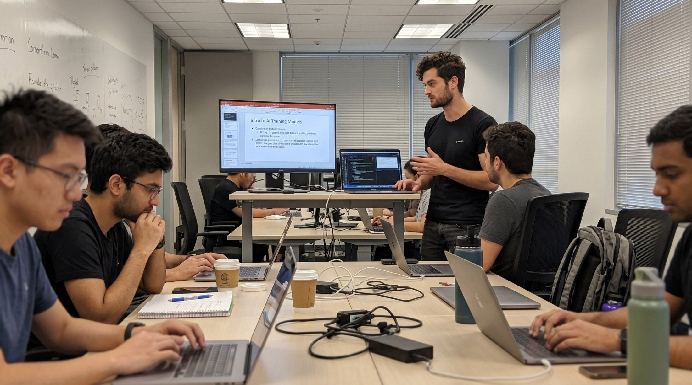
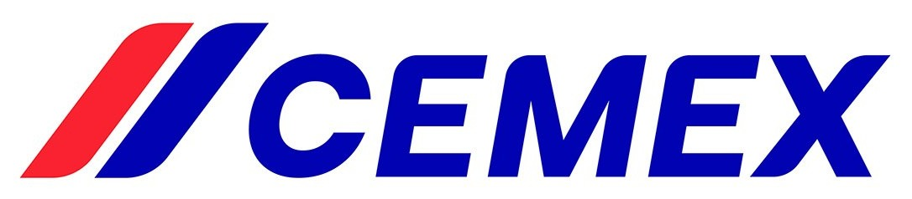
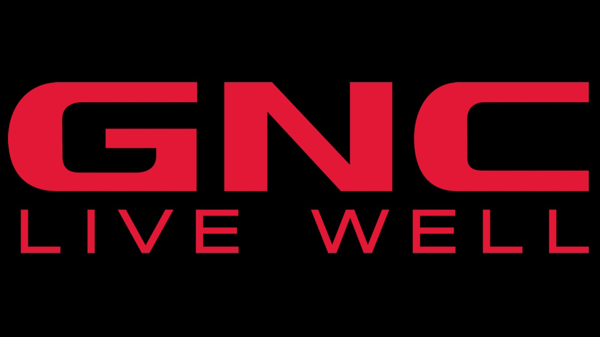
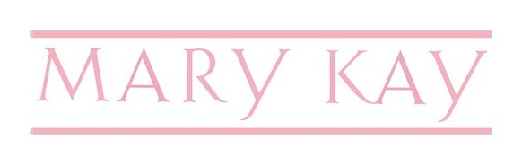

Perfil del Instructor



Gus Garza
Creative technologist, productor y fundador trabajando en IA aplicada a video, diseño, mundos 3D, juegos, automatización creativa y producción audiovisual.
Campañas internacionales
Conceptos, piezas visuales y sistemas de producción para marcas y proyectos globales.
Conceptos, piezas visuales y sistemas de producción para marcas y proyectos globales.
IA generativa aplicada
Prompting, imagen, video, renders, workflows y consistencia visual.
Prompting, imagen, video, renders, workflows y consistencia visual.
Charlas y talleres
Capacitaciones prácticas para equipos creativos, técnicos y estratégicos.
Capacitaciones prácticas para equipos creativos, técnicos y estratégicos.
Herramientas que Utilizaremos

Equipo de Marketing que utilizan:



PHATTY / Phatty Acid como centro de producción
Usaremos esta plataforma para trabajar con modelos líderes en un solo flujo: prompting, generación visual, video, renders, edición y armado de materiales.
GPT Prompting
Kling
Veo
Sora
Imagen
Video IA
Renders
Diseño
Flujos creativos